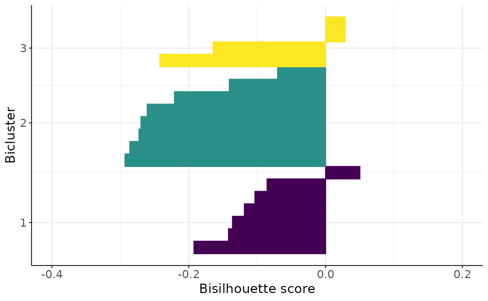

Plot the bisilhouette score for each sample.
Usage
bisil_plot(
data,
row_clusters,
col_clusters,
filename = NULL,
method = "euclidean",
h = 6,
w = 6
)Arguments
- data
A matrix of data (n x p).
- row_clusters
A matrix of row cluster indices (n x k).
- col_clusters
A matrix of column cluster indices (p x k).
- filename
The filename to save the plot, if NULL the plot is not saved. Default is NULL.
- method
The distance method to use for calculating the bisilhouette score. Default is "euclidean".
- h
Height of the plot in inches, default is 6.
- w
Width of the plot in inches, default is 6.
Examples
data <- matrix(stats::rnorm(50), nrow = 10)
row_clustering <- cbind(
stats::rbinom(10, 1, 0.5),
stats::rbinom(10, 1, 0.5),
stats::rbinom(10, 1, 0.5)
)
col_clustering <- cbind(
stats::rbinom(5, 1, 0.5),
stats::rbinom(5, 1, 0.5),
stats::rbinom(5, 1, 0.5)
)
bisil_plot(data, row_clustering, col_clustering)
